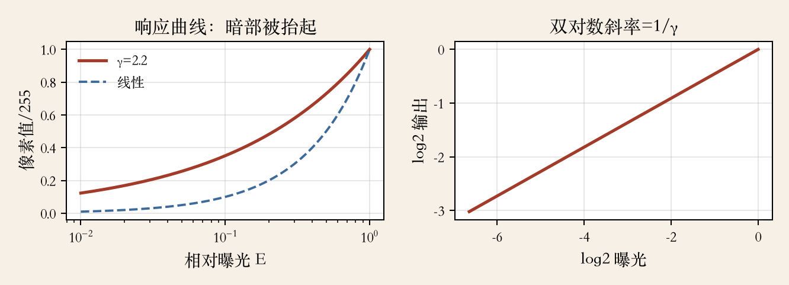
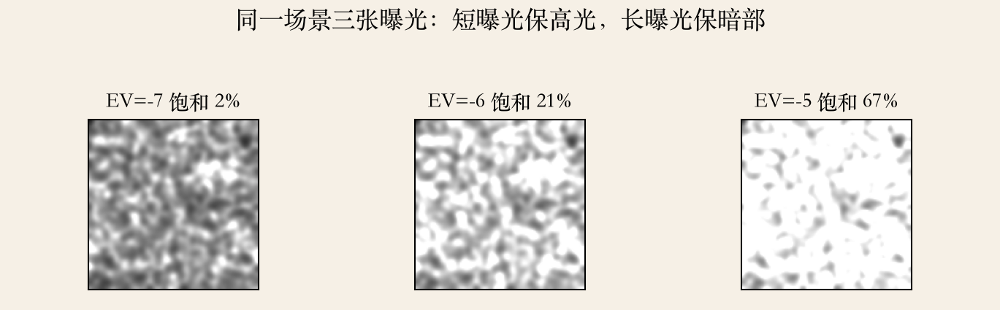
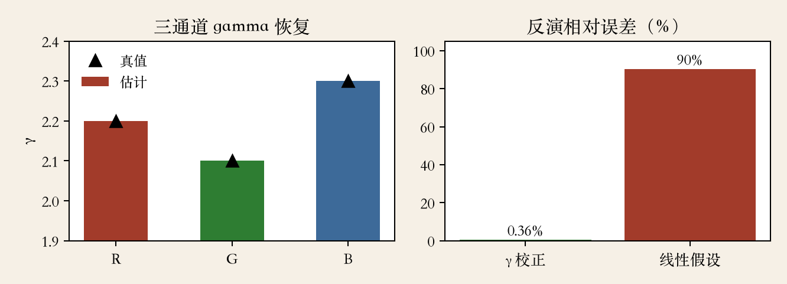

开场
光怎样变成像素值
- 上一集看计算摄影全景。
- 这一集只看辐射响应标定。
- 相机响应曲线不是直线。
- 曲线估错，后面多帧算法都会偏。
依据：原书第 610–613 页
为什么先标定
多帧算法要把像素值换回辐亮度
曲线不对，每一步都在错的基础上算
标定的输出是一条可复用的映射
三样要标定
辐射响应、暗角与 PSF
- 三样要标定的东西。
- 辐射响应：光子变成数字。
- 暗角：边角为什么变暗。
- 点扩散函数：细节为什么糊。
依据：原书第 610 页
三种误差
映射错：亮度和颜色错
暗角：边角变暗
点扩散函数：细节变糊
本集只拆第一样
曝光与增益
光圈、快门、EV 和 ISO
- 光圈和快门是全局乘子。
- 曝光值 EV 是 log2 的亮度比。
- 加一档 EV，光量翻倍。
- ISO 是电子增益，噪声一起放大。
依据：原书第 611 页
RAW 与 JPEG
RAW 忽略噪声时可近似线性
进 JPEG 后处理不再线性
不同 ISO 的像素值不能直接比
JPEG 链路
JPEG 的 ISP 流水线
- 拜耳去马赛克、锐化、白平衡。
- 然后伽马、YCbCr、DCT 和量化。
- 链路里线性和非线性混在一起。
- 所以像素值不等于辐亮度。
依据：原书第 611 页
每一步做什么
去马赛克：靠邻域猜颜色
白平衡：通道乘不同系数
伽马：把暗部抬亮
量化：丢掉高频细节
标定路线
响应曲线难建模，走哪条路
- 处理步骤太多，曲线很难直接建模。
- 三条路：色卡、多曝光、ICC。
- 能控光拍色卡，能重拍做多曝光。
- 只有零散照片，就查 ICC 或退回经验假设。
依据：原书第 611/613 页
三条路的代价
色卡：要均匀照明
多曝光：场景和相机不能动
ICC：省事，但不针对现场
白墙平场只能标暗角
实验一 · 响应曲线
双对数一画，gamma 就现形
- 红线是伽马 2.2，蓝虚线是线性。
- 暗部被曲线明显抬起。
- 双对数坐标下，斜率约 0.45。
- 0.45 正好是 1/2.2。
依据：本集实验

响应曲线：gamma 2.2 与线性对照，双对数斜率=1/gamma｜程序生成，未用教材或论文原图
多曝光标定
同一场景，拍多张不同曝光
- 三脚架固定，同一场景拍多张。
- 每张曝光不同，输出也不同。
- 同时估计辐亮度和响应曲线。
- 这也是后面 HDR 合并的基础。
依据：原书第 613 页
拍摄要点
固定光圈和 ISO，只改快门
每张曝光时间都要记录
场景有运动，先对齐
未知数是辐亮度和曲线参数
实验二 · 三通道 gamma
不知道辐亮度，也能估 gamma
- 合成 8 个 EV，三个通道分开拟合。
- 真值分别是 2.2、2.1、2.3。
- 三个通道都估到小数点后两位。
- 场景动态范围约 158 倍。
依据：本集实验
为什么能估
同一像素跨曝光的斜率
只取决于曝光倍数和伽马
场景亮度被消掉
坏像素不会带偏整条曲线
实验三 · 反演
曲线认错，亮度就全错
- 短曝光只饱和 2.3%。
- 长曝光饱和到约 67%。
- 伽马反演的误差是 0.36%。
- 硬假设线性，误差约九成。
依据：本集实验
哪些像素可信
饱和像素不能用
太暗、量化级太少的也不能用
拟合先剔除两端，只留中间段
真实相机要先减黑电平
实验四 · 多曝光
短曝光保高光，长曝光保暗部
- 同一场景，三张曝光从短到长。
- 饱和从 2.3% 升到 67%。
- 单张总有像素被削顶或埋进噪声。
- HDR 合并要按可信度加权。
依据：本集实验

同一场景三张曝光：EV −7/−6/−5，饱和从 2% 升到 67%，短曝光保高光、长曝光保暗部｜程序生成，未用教材或论文原图
实验五 · 输出比
EV 加一，输出乘 1.37
- 曝光加倍，输出比是 1.37。
- 这正是 2 的 1/2.2 次方。
- 线性假设会以为输出乘 2。
- 比值只跟伽马和曝光倍数有关。
依据：本集实验
比值能做什么
检查曝光时间有没有记错
判断线性假设是否适用
硬套线性，辐亮度和颜色都会偏
实验六 · 恢复
九成误差压到百分之一以内
- 左图三根柱是估出的 R、G、B 伽马。
- 黑三角是真值，三根柱都贴着它。
- 伽马校正的误差是 0.36%。
- 线性假设的误差约九成。
依据：本集实验

三通道 gamma 恢复；gamma 校正与线性假设的反演误差｜程序生成，未用教材或论文原图
工程清单
先暴露问题，再谈合并
- 有 RAW，先用线性近似，查黑电平和饱和。
- 只有 JPEG，按伽马 2.2 起步。
- 能控光拍色卡，能重拍做多曝光。
- 零散图用 ICC 或经验假设。
依据：原书第 611/613 页
还要检查
饱和、噪声、照明不匀
不同 ISO 的噪声曲线不同
参数随相机、镜头、ISO 记录
条件变了就重拍，不要复用
收束 · 下一集
响应不是直线
- 相机响应不是直线。
- 不知道伽马，亮度反演会错一个数量级。
- 多曝光既能标定曲线，也能铺路 HDR。
- 下一集：包围曝光 HDR。
依据：原书第 610–613 页
交给下一集
曲线和曝光时间是已知量
先对齐，再合并
先确认每张的曝光和曲线可信